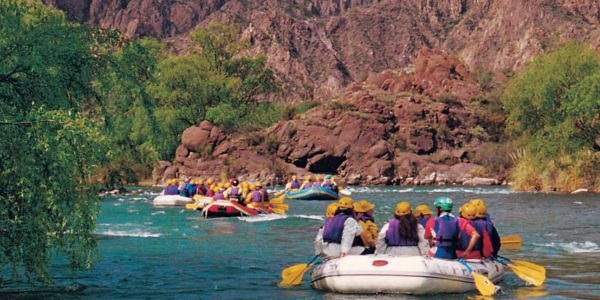
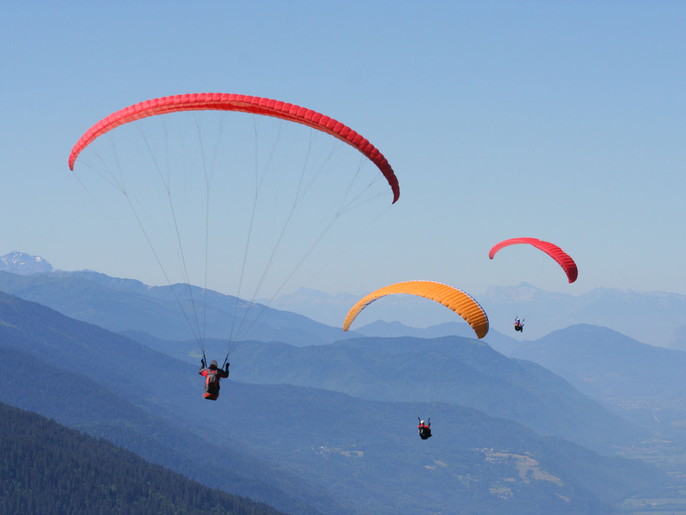
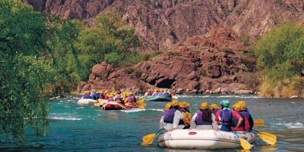
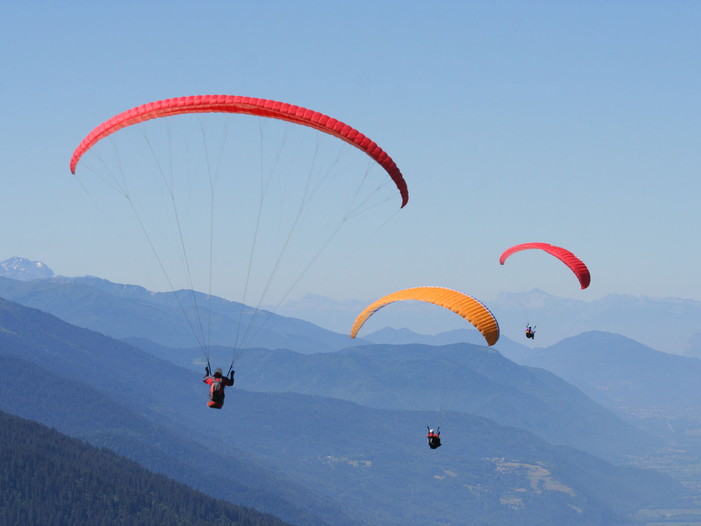

Mendoza y San Rafael

3 noches en Mendoza / 2 noches en San Rafael
Incluye:
Transfer
Hotel
Coordinador
Mendoza:
“Tierra del Sol y del buen Vino”
La ciudad de Mendoza es la más importante de la región cuyana. Famosa por su cerro Aconcagua, por sus vinos malbec y porque en ella se tejió la gesta del libertador general San Martín, padre de la Patria, es una de las ciudades más hermosas y cuidadas del país.
La ciudad está ubicada al pie de la cordillera de los Andes, formando un increíble oasis creado por el hombre merced a los ríos Mendoza y Tunuyán.
La Ruta del Vino es uno de los atractivos más añejos y renovados que tiene la ciudad. Los visitantes pueden recorrer distintas bodegas degustando todos los vinos producidos allí, que han hecho famosa esta región en el mundo. Y cada año, promediando el verano, se celebra en Mendoza la Fiesta de la Vendimia.
Pero también la naturaleza reina en esta ciudad que oficia de punto de partida para todo tipo de actividades de aventura y deportes de alta montaña, como el andinismo, la escalada deportiva y el esquí, además del rafting que se practica en el río Mendoza, con algunos tramos de gran dificultad apreciados incluso por los mejores del mundo en la especialidad.
San Rafael:
San Rafael, nacida en el medio de un gran oasis, fruto del aporte de las aguas de los ríos Diamante y Atuel es un paraíso en la tierra; ricos y variados paisajes, aguas límpidas y aire puro.
Al pie de la Cordillera de los Andes, una tierra repleta de bellezas naturales y grandes experiencias. Diversión, Naturaleza, Aventura, Gastronomía, Relax; Turismo de Reuniones, Historia, Museos y Cultura hacen de este lugar una verdadera opción turística gracias a la conjunción de sus imponentes paisajes como el Valle Grande, el Cañón del Atuel, El Nihuil, diques y embalses de Los Reyunos, El Tigre, Agua de Toro, la Vieja Villa 25 de Mayo, entre otros, que brindan diversas alternativas para disfrutar la naturaleza con tranquilidad, seguridad para toda la familia, las actividades de aventura como rafting, trekking, mountain bike, jet ski, wind surf, kayak, pesca, buceo, cabalgatas, enduro, 4 x 4, parapente y rappel en una zona con increíbles bellezas naturales.

 



Opcionales:
Mendoza
- Alta Montaña
- Vinos y Sabores de Maipu con almuerzo en bodega
- Termas de Cacheuta con traslados y almuerzo – dia de spa
- City tour
- Bodegas y aceitera
San Rafael
- Cañon del Atuel
- Dique Los Reyunos
- City Tour
- Las Leñas
- Camino del Vino